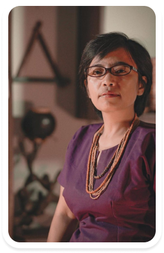

AMAN - Meets The Nation
“Menjelajah Papua, Melawan Stigma”
HOST
Mamat Alkatiri
Komilka
PEMBICARA
Mathius Awoitauw
Bupati Jayapura

Rukka Sombolinggi
Sekjen AMAN
Papua dengan keunikan dari budaya & karakter. Tanah yang kaya dengan keindahan alamnya, ragam adat istiadatnya. Papua yang sampai sekarang ini masih memegang tradisi di setiap suku. Hal itu tidak terlepas dari peran Masyarakat Adat Papua dalam melestarikan
SDA dan menjaga tanah serta wilayah adat. Simak diskusi yang akan membuka kacamata kita untuk bisa mengenal Masyarakat Adat Papua lebih dalam.